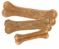

Милые кости

Описание товара
Зубочистики говяжьи для собак средних пород
Характеристики товара
- Зубочистики — лучшие лакомства для чистки зубов, отлично снимают зубной налет, предотвращают появление зубного камня, и борятся с болезнями десен.
- Запантетованная структура позволяет сделать чистку максимально эффективной, сопоставимой с механической.
- Существенное содержание кальция укрепляет кости и зубы собаки. 100%- натуральный состав и отсутствие любых искусственных ингридиентов способствует легкому усваиванию.
- Для собак от 10 до 25 кг.
Все права защищены ©.